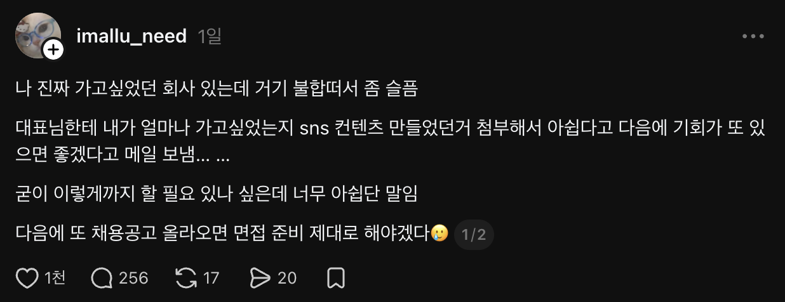
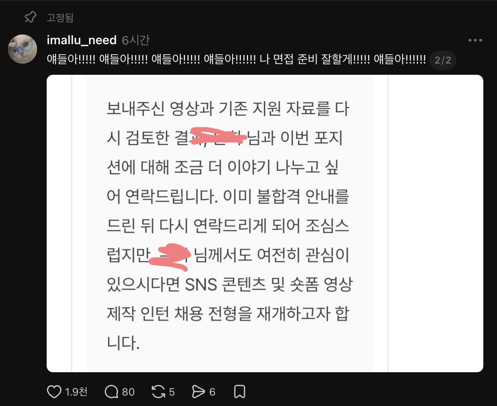

닫은 문 두드려서 열어버림


닫은 문 두드려서 열어버림
이터널리턴 팀인것도 안 들어가있음
삶을 살아라 너는 좀
예전에 승우아빠도 식당 문연다고 하니까 수 많은 사람들이 하고싶다고 메일을 보냈지만
한명인가 두명인가만 이력서랑 같이 메일 보내서 그 사람들 채용했다더만ㅋㅋ
존내 멋있다
추진력과 용기가 멋있네.
뽑는입장에선 하겠다고 눈에 불켜고 덤비는 사람에게 눈이 가지. 서류보고 면접보고 하는게 결국 그런사람 찾아내려는 거라서.
맨땅에도 노를 젓던 사람만이 물이 들어왔을때 나아갈 수 있지
다른 직무도 아니고 sns 마케팅은 저런 사람들 쓰고싶지
어차피 인턴이라 부담도 없음
저정도면 문 비밀번호나 카드키도 하나 쥐여준거 같은데
유승준 - 열정
개미가 힘이없데
스티븐유? 도망갈 열정으루말한걸까
추방당한 후부터 지금까지 꾸준히 입국시켜달라고 하는 거 보면 열ㅋㅋㅋ정ㅋㅋㅋ은 아직 있나봄ㅋㅋ
대기업 정규직이었으면 불가했을텐데
거긴 모두가 다 저래
진짜 진짜 간절하면 어떻게든 된다.
그렇게 하는 사람이 없어서 가능함.
저런게 결국 처음 인턴이나 계약직 입사할 때에는 확실히 도움됨
물론 그 후에 잘해야 정규직이 되는거긴 하지만 ㅋㅋㅋㅋㅋ
최근 우리 팀에 계약직 신입이 저런식으로 열정 어필해서 한 달 계약했고 지금 3주 정도 되었는데
ㅈㄴ ㅈㄹ같이 못하는 데다가 거짓말을 수시로 하고 계속 문제 일으키고
몇 달 전에 들어온 다른 계약직 애들 ㅈㄴ 무시해서 팀장님이 재계약 안한다더라
이러니저러니 해도 정규직까지 가려는 열정이 강해 보여서 팀장님이 뽑았다고 하셨다만... 계약직 한 달이라 어찌보면 다행이지
그치 열정이 능력으로 다 이어지진 앟으니까
열정이.멋있네 잘됐다
ㅊㅊㅊㅊ
태원이형 재용이형 내가 간다 기다려!!!
뽑는 입장에서도 마음이 동하겄지 그야
나도 결혼 2달전에 회사에서 짤려서 파혼해야하나 걱정하고 있었는데
어디든 들어가야겠다 싶어서 내가 거들떠도 볼 수 없는 직군에 지원하고 면접까지는 봤는데
같이 면접 본 애들이 전부 대학원도 나오고 포트폴리오도 한두개씩 있고 설명도 잘하고 그랬음
나는 진짜 간절한 마음으로 다음날 면접관한테 전화해서 결과 언제 나오냐고 진짜 하고 싶다고 그렇게 어필하니까 다음날 합격했다고 출근하라더라
출근하니까 쟁쟁했던 사람 한명이랑 나랑 2명 붙어서 출근했는데 결국 쟁쟁했던사람은 1년 되기 전에 다른회사 이직 했다가 짤리고 다시 우리 회사 문 두드렸지만 얄짤 없었음
나는 지금 회사 계속 다니고 있고 연봉도 꽤 오름
닫은 문 억지로 열어버리기ㅋㅋㅋㅋㅋ
생각보다 요즘 절차 규정 외로 어필하는 친구들 많이 없어서 저런애들 눈에 잘띄긴 함
인턴으로 아이디어 다 뽑아먹고 정규직 전환 안시키기
당해보셧군요…
여기서 사전설명이 필요한 것
냐미, 피박, 파트너 스트리머 채용 과정